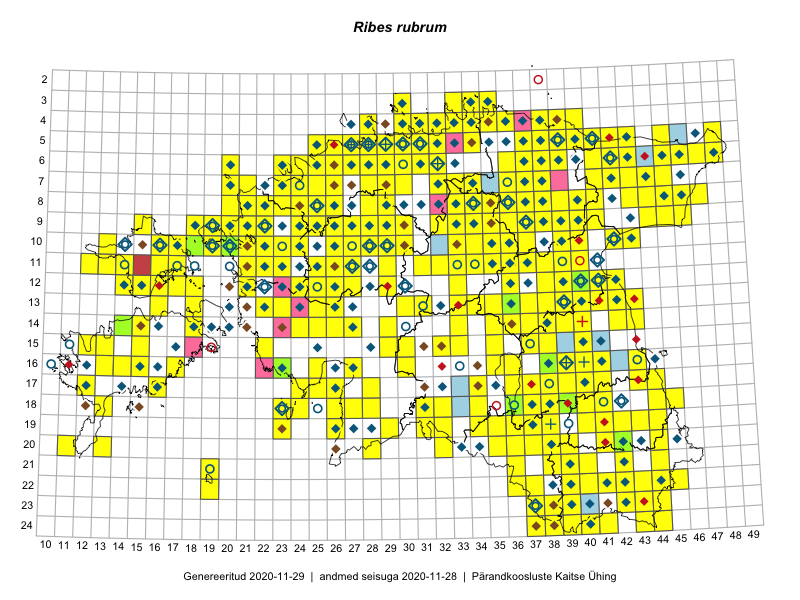

Ribes rubrum
Uuendatud: 2016-12-02
Kaardile koondatud taksonid: Ribes rubrum L.

Kaart põhineb 465 kirjel, neist vaatlusi 463 ja eksemplare 2. Taksonit on leitud 300 ruudust.
Kuvatud viited 20 esimesele andmebaasikirjele, ülejäänud PlutoFis
- Malle Leht: 2015-05-16: : ala
- Peedu Saar, Liina Oja: 2015-05-22: 19-29: ala
- Peedu Saar, Liina Oja: 2015-05-20: 18-27: ala
- Malle Leht: 2015-08-02: : ala
- Peedu Saar, Liina Oja: 2015-05-21: 16-25: ala
- Peedu Saar, Liina Oja: 2015-05-20: 18-26: ala
- Toomas Kukk, Eerik Leibak: 2015-08-09: 14-15: ala
- Toomas Kukk, Eerik Leibak: 2015-08-12: 10-17: ala
- Peedu Saar, Toomas Kukk: 2015-05-26: 10-16: ala
- Rein Kalamees, Kersti Püssa: 2015-08-31: 04-32: ala
- Tiit Hallikma, Indrek Tammekänd, Toomas Kukk: 2015-06-09: 12-29: ala
- Tiit Hallikma, Toomas Kukk: 2015-07-21: 05-45: ala
- Toomas Kukk, Raivo Kalle: 2015-05-13: 06-38: ala
- Toomas Kukk, Raivo Kalle: 2015-05-12: 10-39: ala
- Toomas Kukk, Raivo Kalle: 2015-05-12: 10-40: ala
- Peedu Saar, Ott Luuk: 2015-06-21: 14-42: ala
- Ott Luuk, Peedu Saar: 2015-07-27: 11-35: ala
- Toomas Kukk, Raivo Kalle: 2015-05-11: 09-36: ala
- Toomas Kukk, Raivo Kalle: 2015-05-11: 09-37: ala
- Toomas Kukk, Raivo Kalle: 2015-05-11: 09-38: ala